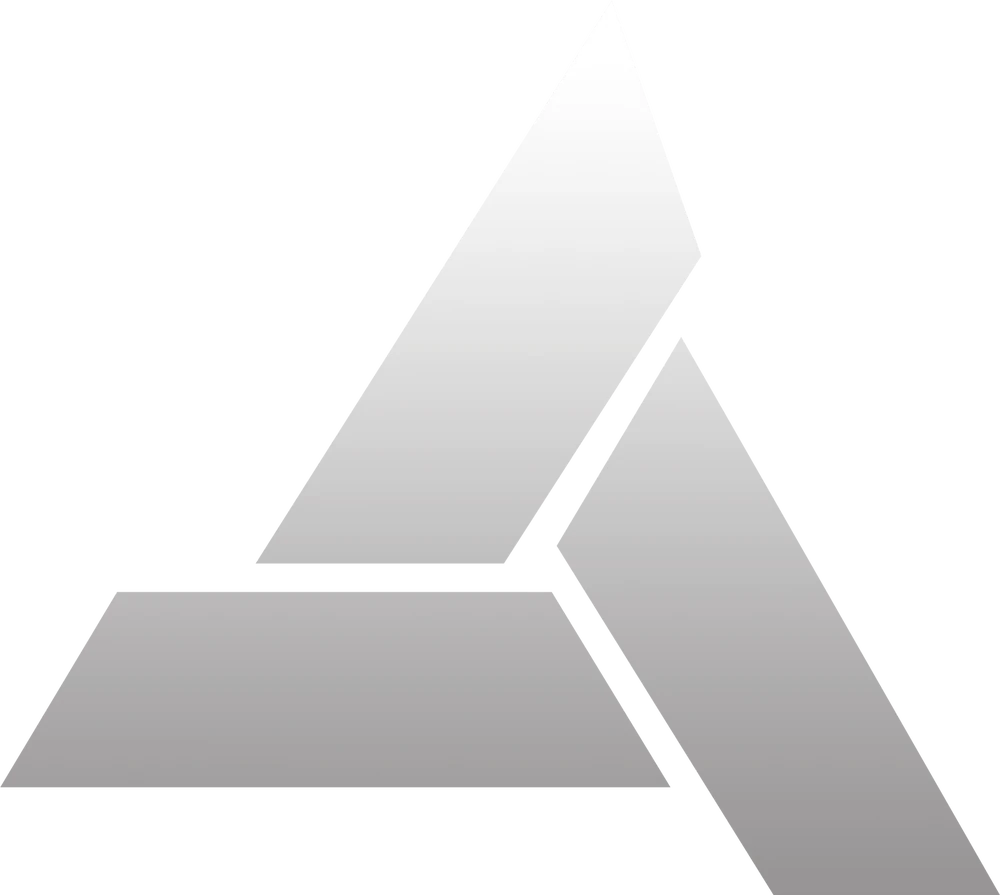

O Animus v1.28 está operacional. As memórias genéticas do Sujeito foram carregadas com sucesso nos servidores da Abstergo Industries. A análise está em andamento.
> Interface de Memória Genética . . . . . ATIVO
> Protocolo de Sincronização . . . . . . ATIVO
> Sistema de Arquivos Legado . . . . . . ATIVO
> Firewall Externo . . . . . . . . . . . ATIVO
> Portal do Sujeito . . . . . . . . . . RESTRITO